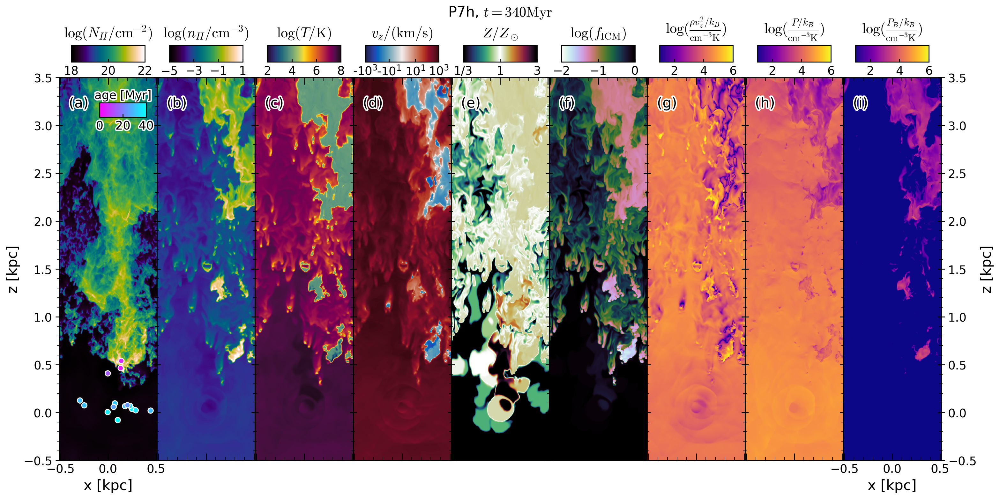
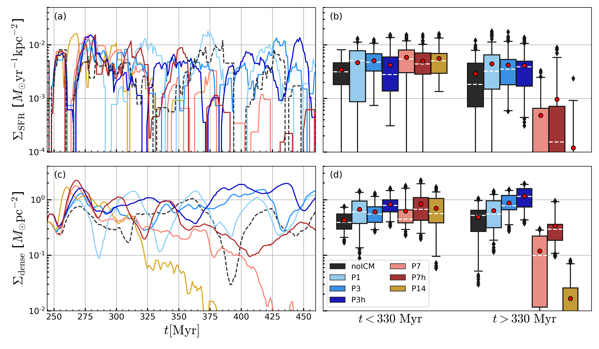
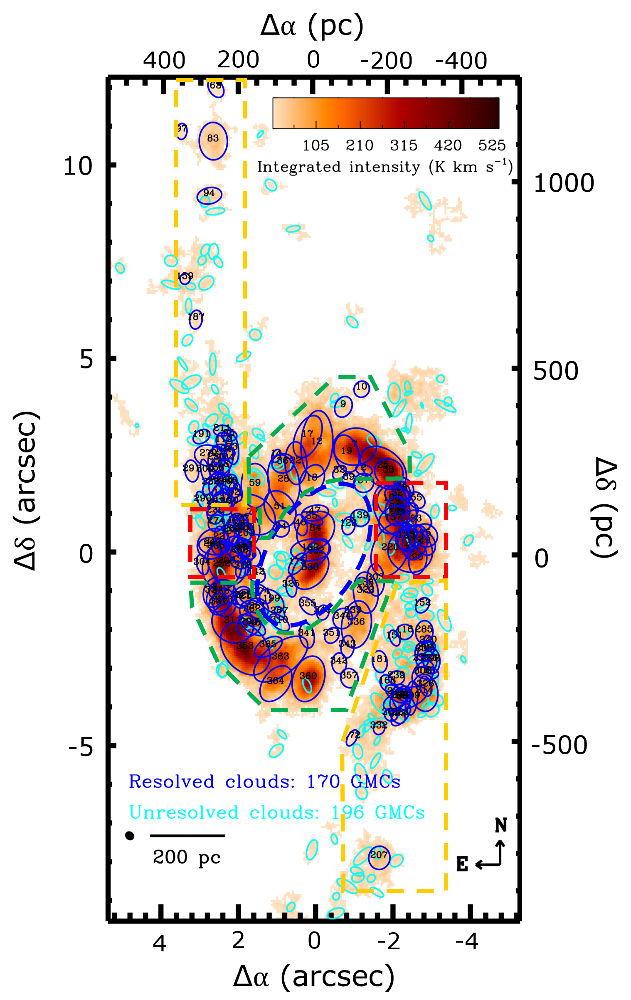
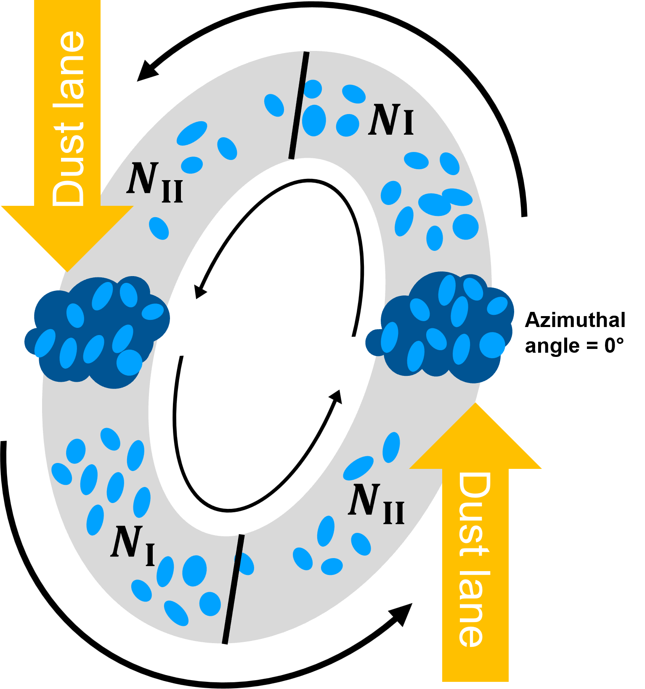
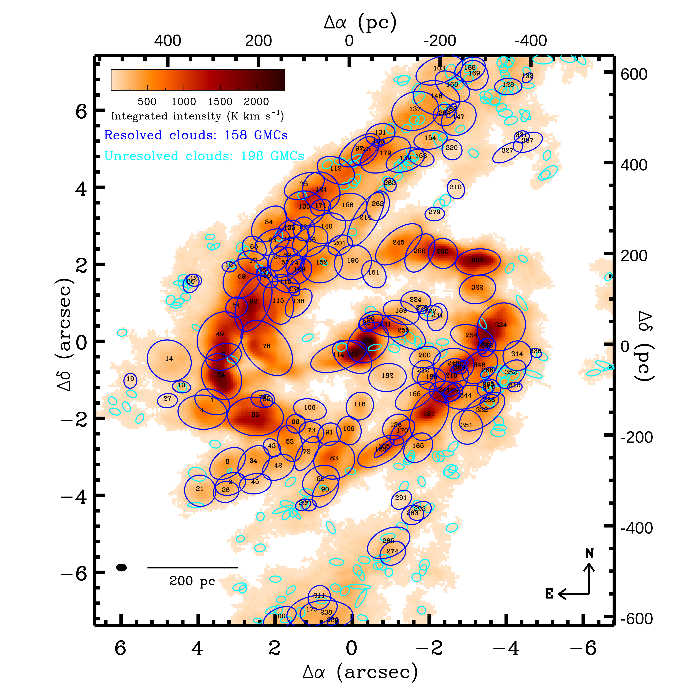
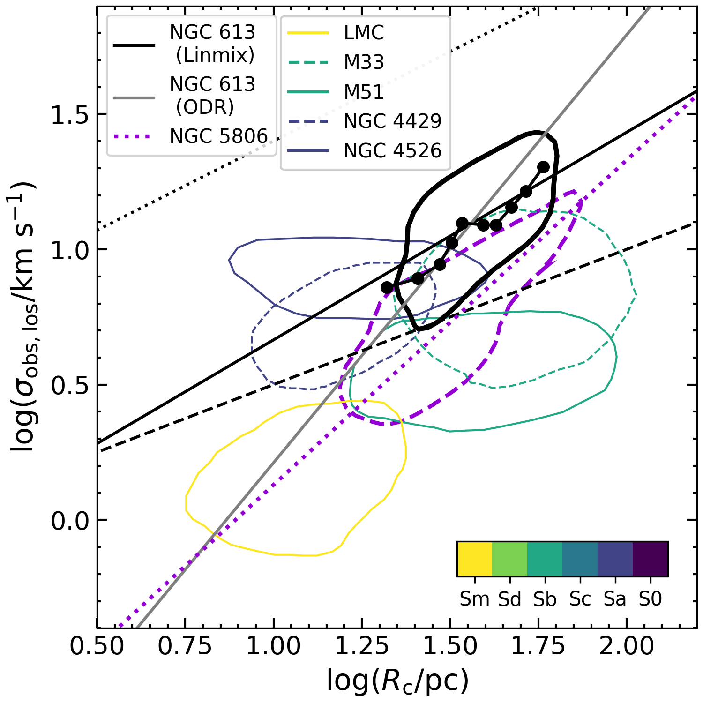

Research
Ram Pressure Stripping of the Multiphase ISM: A Detailed View from TIGRESS Simulations


- Core Question: How does ram pressure stripping (RPS) affect the multiphase interstellar medium and regulate star formation in galaxies?
- Key Findings:
- The inflowing intracluster medium (ICM) penetrates low-density channels of the ISM, shredding cold gas and forming mixing layers.
- Mixing-driven momentum transfer is crucial—leading to an anticorrelation between outflow velocity and gas metallicity.
- Moderate ICM pressure can enhance star formation by up to 50%, while high ICM flux quenches star formation within ~100 Myr.
- Implications:
- This study reveals the complex interplay between ICM and a multiphase ISM in cluster environments.
- It emphasizes the role of mixing processes in driving gas dynamics and regulating star formation.
WISDOM Project – XV. Giant Molecular Clouds in the Central Region of the Barred Spiral Galaxy NGC 5806


- Core Question: How do the properties of giant molecular clouds (GMCs) in NGC 5806’s central region reflect the influence of bar-driven gas dynamics?
- Key Findings:
- High-resolution ALMA observations (~24 pc) identified 170 spatially resolved GMCs.
- These GMCs exhibit larger masses, higher velocity dispersions, and a steeper size–linewidth relation (slope ~1.2) than typical Milky Way clouds.
- Bar-driven shocks and gas inflows (≈120 km/s and an inflow rate of ~5 M☉/yr) likely shape their short lifetimes (~6 Myr).
- Implications:
- The results highlight how central bars can modify GMC properties and trigger enhanced star formation.
- The steep size–linewidth relation may serve as a diagnostic of dynamic, bar-influenced environments.
WISDOM Project – XXI. Giant Molecular Clouds in the Central Region of the Barred Spiral Galaxy NGC 613: A Steep Size–Linewidth Relation


- Core Question: What drives the steep size–linewidth relation of GMCs in NGC 613's nuclear ring, and how does this relate to their dynamic environment?
- Key Findings:
- ALMA 12CO(1–0) observations at ~20 pc resolution identified 158 GMCs with sizes similar to Milky Way clouds but with enhanced masses and velocity dispersions.
- The GMCs follow a steeper size–linewidth relation (slope ~0.77), suggesting increased turbulence and dynamic support.
- On average, these clouds are only marginally gravitationally bound (mean virial parameter ≈1.7), indicating external processes like stellar feedback and cloud collisions are significant.
- Implications:
- The distinct scaling relations underscore the influence of bar-driven inflows on cloud dynamics in galaxy centers.
- Understanding these properties is crucial for refining models of star formation in barred galaxies.
Back to Home